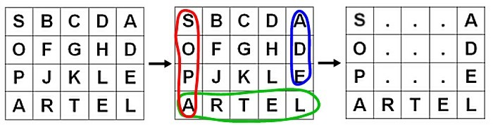

Everyone knows the "Word Search" puzzle, which basically consists of finding words in a grid of letters.
A word search is essentially a grid of letters, always uppercase, and a word can be found only horizontally (from right to left or from left to right) or vertically (from top to bottom, or from bottom to top). For this problem, words cannot appear diagonally.
Your task is to solve a word search puzzle.
For example, imagine you had to search for the following words in the word search shown in the figure:
SOPA LETRA EDA

The idea is that your program discovers where the words are. To show that you really found them, all the letters that do not belong to any word should be replaced with a dot, as illustrated in the figure. See the input and output example to clarify what you should do.
An input file contains several test cases.
The first line of each test case contains two numbers LINS COLS, indicating respectively
the number of rows and columns of the word search (1 ≤ LINS,COLS ≤ 100).
The following LINS lines contain the grid, each with COLS uppercase letters,
without spaces between them.
Next comes N (1 ≤ N ≤ 50), the number of words to search for. The next
N lines contain the words themselves, also represented only by uppercase letters (each word
has a maximum length of 50 letters). It is guaranteed that each of these words appears in the grid
exactly once (in one of the four valid directions).
A case with 0 rows and 0 columns signals the end of the input and should not be processed.
For each case, you should first print a line of output, "Input #NUM", where
NUM represents the case number, followed by the printing of the word search in the required
format, with the words highlighted.
See the example to clarify how the output should be formatted.
Input
4 5 SBCDA OFGHD PJKLE ARTEL 3 SOPA LETRA EDA 8 10 EABDFGHJNM SASDDFOCVB TXSCSFTCAQ EZVFACILSD AQWUHNUFSV PROBLEMADA HCVDASEFVB WMLFACIFSD 5 ESTE PROBLEMA FICA MUITO FACIL 0 0
Output
Input #1 S...A O...D P...E ARTEL Input #2 E......... S.....O... T.....T... E..FACIL.. ......U... PROBLEMA.. .......... ....ACIF..